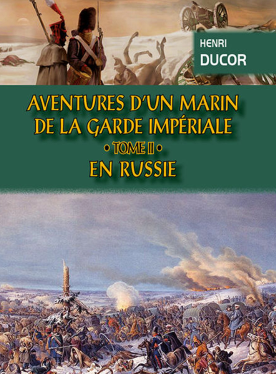
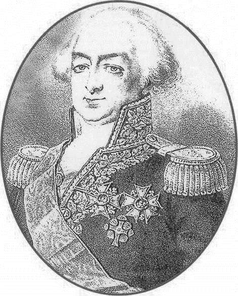
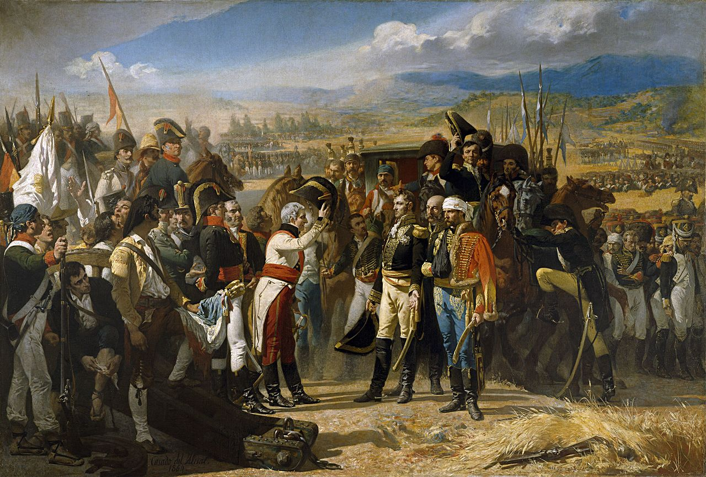

갈증과 이질 - 러시아군의 뒤를 쫓아서 (2)
게시: 2020-02-03T06:30:50+09:00
여기서 잠깐 앙리 뒤코르(Henri Ducor)라는 프랑스 해군 수병 이야기를 해보겠습니다. 앙리는 원래 12살 때부터 사환으로 프랑스 해군 함정에 타기 시작한 선원이었고, 타고난 신체 조건과 근면함으로 20세가 되기도 전에 조타수 직위까지 승진한 유능한 뱃사람이었습니다. 뱃사람이었던 그는 러시아 원정과는 아무런 상관이 없어야 할 인물이었습니다. 하지만 인생은 진짜 모르는 것입니다. 그의 첫 고난은 나폴레옹의 명령을 받은 빌뇌브 제독의 함대가 카리브 해의 영국 식민섬을 공격하면서 시작되었습니다. 이 함대가 바로 트라팔가 해전에서 넬슨이 이끄는 영국 함대에게 박살이 난 바로 그 함대였거든요. 빌뇌브는 영국 해군의 포로로 잡혔지만 프랑스 함대 전열함 중 5척은 무사히 탈출하여 카디즈(Cadiz) 항구로 돌아왔습니다. 그러나 프랑스 잔존 함대 수병들의 고난은 트라팔가 해전에서 영국제 대포알에 맞아 죽을 뻔 한 것만으로는 끝나지 않았습니다. 카디즈로 돌아와보니 로질리(François Étienne de Rosily-Mesros) 제독이 잔존 함대의 지휘를 하겠다며 기다리고 있었습니다. 원래 트라팔가 해전이 벌어지게 된 직접적인 이유가 바로 이 로질리 제독 때문이었습니다. 원래 프랑스-스페인 연합함대를 이끌고 있던 빌뇌브 제독은 영국 해군에 맞서서는 도저히 승산이 없다고 보고 카디즈 항 밖으로 나갈 생각이 없었습니다. 그런데 빌뇌브의 무기력함에 화가 난 나폴레옹이 빌뇌브를 해임하고 그 후임으로 임명할 새 제독으로 로질리를 파견했다는 소식이 들려오자, 빌뇌브는 그런 치욕을 당하느니 뭐라도 하자는 생각으로 로질리가 오기 전에 서둘러 출항을 했던 것입니다. 그 결과는 다들 아시다시피 대참패였지요.

(앙리 뒤코르의 회고록은 아직 영문판으로는 없고 프랑스어판만 있습니다. 저는 당연히 못 읽어봤습니다.)
로질리로서도 황당한 입장이었을 것입니다. 33척의 전열함을 갖춘 대함대를 지휘하려고 왔는데, 카디즈까지 와보니 함대는 다 부서지고 프랑스 해군 전열함은 5척만 남아 있었으니까요. 더 큰 문제는 그렇게 카디즈에 갇힌 상태로 나폴레옹의 스페인 침공이 시작되는 바람에 로질리의 함대는 바다에서는 영국 함대에 의해, 육지에서는 스페인 육군에 의해 졸지에 독안에 든 쥐가 되었다는 것입니다. 거의 3년 가까이 카디즈 항구에 갇혀 있던 1808년, 항구에 정박한 프랑스 해군 전열함에 대고 스페인 함대가 이틀에 걸쳐 1200발의 포격을 가하는 사태까지 벌어지자, 로질리는 결국 스페인 측과 항복 협상을 하게 됩니다. 그 결과는 로질리와 장교들은 프랑스로 돌아가되, 프랑스 전열함들은 모두 스페인 해군에게 압수되었습니다. 문제는 그 수병들이었습니다. 이들은 포로로 스페인에 남아야 했는데, 제대로 된 수용소도 아니고 헐크(hulk, 프랑스어로 ponton)선이라고 불리던 폐선박에 빽빽히 수용되었습니다. 햇빛도 들지않고 습기만 가득한 헐크선에서 썩은 음식만 먹어야 했던 프랑스 수병 포로들은 배고픔보다도 더 절실한 고통에 시달려야 했습니다. 스페인 감시병들이 물을 제대로 주지 않아서 심각한 갈증에 시달려야 했던 것입니다. 그리고 앙리 뒤코르도 이렇게 갈증과 배고픔에 시달리던 불쌍한 포로 중 하나였습니다.

(로질리 제독입니다. 그는 비교적 비정치적이고 단순 기술직 관료여서 그랬는지 부르봉 왕가 복위 후에도 이런저런 기술 관직을 맡으며 잘 지냈습니다.)

(1808년, 스페인 남부 안달루시아 지방의 바일렌에서 벌어진 전투에서 항복하고 있는 프랑스군 제2 군단장 뒤퐁 장군의 모습입니다. 이때 프랑스군 2200명 정도가 사망하고 나머지 1만7천 이상의 병사들이 항복했습니다. 이때 항복한 병사들은 앙리 뒤코르와 함께 카브레라 섬에 수용되었고, 이들이 비참한 포로 생활에서 풀려난 것은 무려 6년 후, 1814년 나폴레옹이 엘바섬으로 1차 귀양을 간 이후의 일이었습니다.)
이들을 언제까지고 여기에 둘 순 없었던 스페인군은 이들을 결국 바일렌(Bailen) 전투에서 포로가 된 프랑스 제2 군단 포로들과 함께 지중해의 무인도인 카브레라(Cabrera) 섬에 내팽개쳤습니다. 처음에는 그 좁고 축축하고 어두컴컴한 헐크선에서 나와서 밝은 햇살을 보게 되니 좋았습니다만, 그 기쁨은 곧 다시 배고픔으로 바뀌었습니다. 스페인군은 이 외딴 섬에 4일에 한번씩 일인당 빵 1.5 파운드와 약간의 콩과 쌀 정도만 가져다 주었기 때문이었습니다. 당시 프랑스군 배식 정량이 하루에 빵 1.5파운드에 고기 1파운드였던 것을 생각하면 정량의 1/4에도 미치지 못하는 양이었습니다. 그러나 더 큰 일은 식수였습니다. 이 섬에는 샘이 하나 밖에 없었는데 그나마 수량이 적어서, 섬의 프랑스 포로들이 한모금씩 마시기에도 부족한 편이었습니다. 결국 앙리 뒤코르는 카디즈의 헐크선부터 이 카브레라 섬까지 계속 갈증에 시달려야 했습니다. 하지만 앙리 뒤코르는 1811년 결국 뗏목을 만들어 이 저주받은 섬에서 탈출하는데 성공합니다. 이렇게 천신만고 끝에 탈출한 앙리는 특별 휴가를 받아 10년 넘게 만나지 못한 어머니를 보기 위해 파리에 왔는데, 여기서 옛 상관이었던 보니파스(Boniface)라는 중위와 만나게 됩니다. 보니파스 중위는 파란만장한 고난을 겪은 앙리의 이야기를 듣고는 감동을 받아 나름 호의를 베푼답시고 앙리에게 파리의 황실 근위대 휘하 해병 대대로 배속시켜 주겠다는 제안을 했고, 앙리는 당연히 덥석 이 제안을 받아들입니다. 그리고 이것이 앙리에게 또 다른 악몽으로 이어집니다. 바로 다음해인 1812년, 해군 수병이라면 갈 일이 없었던 러시아 원정길에 근위대 소속 해병으로서 앙리도 포함되었던 것입니다.

(프랑스어판 앙리 뒤코르의 '근위 해병대원의 모험' 속에 포함된 삽화입니다. 아마 근위 해병대원의 모습을 저렇게 묘사해놓은 모양입니다. 대포를 한 손으로 지탱하고 있네요...)
여기서 앙리는 비록 배는 고플지언정 바다도 아니고 갇힌 것도 아니니 목은 마르지 않을 거라고 생각했을 것입니다. 착각이었습니다. 일단 7월의 러시아는 매우 더웠고, 그만큼 더 목이 말랐습니다. 한 러시아 장교가 남긴 기록에 따르면 당시 러시아의 여름 온도는 36도 정도였는데 바람도 잘 불지 않아서 정말 더웠다고 합니다. 비가 가끔씩 내리긴 했지만 더위를 식혀주기 보다는 옷과 대지만 축축하게 적실 뿐이었고, 곧 증발하는 습기 때문에 습도만 괜히 높아져서 더욱 무더웠답니다. 그런데 길 주변에 농가가 별로 없다보니 우물도 없었고, 결국 어쩌다 반갑게 만나는 시냇물 외에는 웅덩이나 도랑에 괸 꺼림직한 물 외에는 마실 것이 마땅치 않았습니다. 가끔씩은 너무나 목이 말랐던 병사들이 좀 축축한 대지를 만나면 구덩이를 파서 거기에 고이는 물을 마셔보기도 했습니다. 그러나 그렇게 고인 물에는 벌레들이 꿈틀거리고 있었기 때문에 병사들은 손수건 등으로 그 꺼림직한 물을 걸러서 마셔야 했습니다. 그런 물을 끓여마시기라도 하면 좋겠지만, 그렇게 물을 끓여마시는 것은 밤에 숙영할 때나 가능한 일이었습니다. 무엇보다, 당시 사람들은 물에 들어있는 세균이 병을 일으킨다는 사실과, 그런 병은 물을 끓여마심으로써 예방할 수 있다는 자체를 전혀 모르고 있었습니다. 그래도 이렇게 구덩이를 파고 거기에 고이는 물을 마시는 것은 시간이 있고 힘이 남아 있을 때나 가능한 일이었습니다. 앙리 뒤코르는 그것보다도 상황이 더 안 좋았습니다. 앙리는 결국 살아남아 프랑스로 되돌아왔고, 1830년 대에는 수익성 좋은 증기선 사업을 하는 사업가가 되었는데, 그때 즈음에 자신이 겪었던 기구한 역경에 대해 "Aventures d'un marin de la garde impériale, prisonnier de guerre sur les pontons espagnols, dans l'île de Cabréra, et en Russie" (황실 근위대 소속 수병이자 전쟁 포로로서 겪은 스페인 헐크선과, 카브레라 섬과, 그리고 러시아에서의 모험담)이라는 긴 제목의 회고록을 썼습니다. 여기에서 앙리는 러시아에서조차 또 다시 갈증에 시달렸던 일에 대해 이렇게 적었습니다. "나는 길바닥에 난 말발굽 자국에 고인 물을 마시기 위해 몇 번이나 배를 깔고 엎드려야 했는지 모른다. 지금도 그 누르스름한 액체의 맛을 생각하면 지금도 뱃속이 뒤집힌다." 앙리는 자기처럼 말 오즘이 섞인 고인 물을 마셨던 것이 자기 하나 뿐은 아니었을 것이라고 확신했습니다. 먹을 것도 부실한데 식수 사정까지 이 모양이다보니 병사들 상당수가 극심한 이질과 설사에 시달렸습니다. 하인리히 폰 루스(Heinrich von Roos)라는 뮈라 휘하 기병대 장교 하나는 러시아군을 추격하다 러시아군 후위대가 방금 버리고 간 진지를 발견했습니다. 보통 이런 진지 뒤편에는 병사들이 볼 일을 보는 긴 도랑이 있었습니다. 폰 루스의 말에 따르면 그 도랑 속의 내용물을 보면 이 진지가 러사아군 것인지 프랑스군 것인지 쉽게 알 수 있었습니다. 내용물의 상태가 괜찮으면 러시아군이었고, 설사에 가까운 것이었으면 프랑스군 진지였습니다. 이런 설사는 시도 때도 없이 찾아왔기 때문에 병사들은 행군을 하다가도 허겁지겁 바지를 내리며 길가 풀 숲으로 뛰어들어야 했습니다. 덕분에 그랑다르메의 행군길은 악취가 진동해서, 프란츠 로이더(Franz Roeder)라는 헤센 근위대 장교의 말에 따르면 때때로 구토를 참기 위해 숨을 쉬지 않아야 할 정도였습니다. 오뱅 뒤떼이예(Aubin Dutheillet de la Mothe)라는 21세짜리 어린 소위도 그런 곤란한 상황에 처한 적이 있었습니다. 그는 말을 타고 가다가 급히 신호가 오는 바람에 황급히 말에서 내려 길가로 들어가 바지를 내려야 했는데, 너무 급해서 말을 어디에 묶어놓지도 못했습니다. 그러자 뒤떼이예 소위의 말은 곧 뒤를 따라오던 흉갑기병 연대의 대오를 따라 걸어가버렸고, 뒤떼이예 소위는 그 말에 실려있던 소위의 전체 소지품과 함께 그 말을 두번 다시 보지 못했습니다. 먹을 것과 마실 것이 형편없는데 이질설사까지 심각했으니 그랑다르메 병사들은 행군길에 픽픽 쓰러졌습니다. 징발대가 먹을 것을 본진으로 가져오는 일이 많지 않았던 독일계 뷔르템베르크나 바이에른군의 피해가 특히 컸습니다. 칼 폰 수코프(Carl von Suckow)라는 뷔르템베르크군 장교의 중대는 고향을 출발할 때는 150명이었으나 아직 적군을 단 한번도 보지 않았음에도 불구하고 이때 즈음해서는 38명으로 줄어있었습니다. 전체 2만5천이었던 바이에른군은 비텝스크 근처에 이르렀을 때 1만2천으로 줄어있었습니다. 나폴레옹의 막내 동생 제롬이 내팽개치고 간 베스트팔렌군은 특히 열사병에 큰 고통을 당했는데, 1980명으로 출발했던 베스트팔렌군 연대 하나는 32도의 더운 날씨에 강행군을 한 뒤에 210명만 남아있엇습니다.
Source : 1812 Napoleon's Fatal March on Moscow by Adam Zamoyski https://books.google.co.kr/books?id=IvSXI0vN5VIC&pg=PA27&lpg=PA27&dq=Henri+Ducor+Russia&source=bl&ots=D2gK-B2TXm&sig=ACfU3U04Tqy5SQdaMdUeZgZueyxrysObdA&hl=en&sa=X&ved=2ahUKEwjI8vfx1pnnAhW5KqYKHWuvCogQ6AEwAHoECAkQAQ#v=onepage&q&f=false https://books.google.co.kr/books?id=Y81vCwAAQBAJ&pg=PT577&lpg=PT577&dq=henri+Ducor+napoleon&source=bl&ots=qBSE35ZTfb&sig=ACfU3U0DJqefPPrn1Vn2KtZRWrmeb7-_RA&hl=en&sa=X&ved=2ahUKEwi446_B3ZnnAhXIyYsBHYgfD9QQ6AEwAHoECAgQAQ#v=onepage&q=henri%20Ducor%20napoleon&f=false